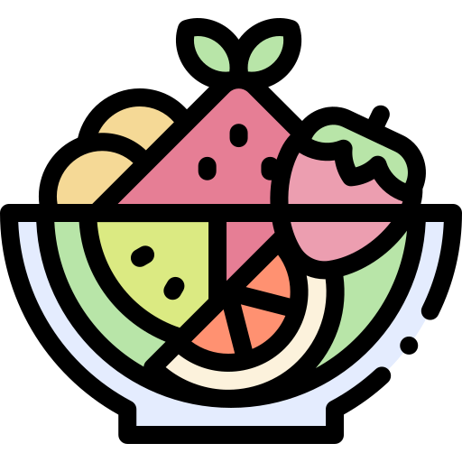

Nutrilliance
Recetas Conocidas
Seco de Pollo
Ingredientes
- 4 piezas de pollo
- 1 taza de culantro licuado
- 1 cebolla picada
- 2 tomates pelados y picados
- 1 pimiento rojo picado
- 1/2 taza de chicha de jora (opcional)
- 2 dientes de ajo
- 2 papas cocidas
- Sal, pimienta y comino al gusto
Instrucciones
- Dora las piezas de pollo en una sartén y resérvalas.
- Sofríe la cebolla, el ajo, el tomate y el pimiento.
- Agrega el culantro licuado, la chicha de jora y cocina por 10 minutos.
- Incorpora el pollo dorado y cocina a fuego lento por 20 minutos.
- Sazona con sal, pimienta y comino al gusto.
- Sirve acompañado de papas cocidas y arroz blanco.

Sopa de Pollo
Ingredientes
- 2 pechugas de pollo
- 1 zanahoria (en rodajas)
- 1 papa (en cubos)
- 1 tallo de apio (en trozos pequeños)
- 1/2 cebolla
- 2 dientes de ajo
- 2 litros de agua
- Sal y pimienta al gusto
Instrucciones
- Hierve el agua en una olla grande.
- Agrega las pechugas de pollo, la cebolla y el ajo. Cocina por 20 minutos.
- Retira el pollo, desmenúzalo y regresa a la olla.
- Agrega la zanahoria, la papa y el apio. Cocina por 15 minutos más.
- Sazona con sal y pimienta al gusto. Sirve caliente.